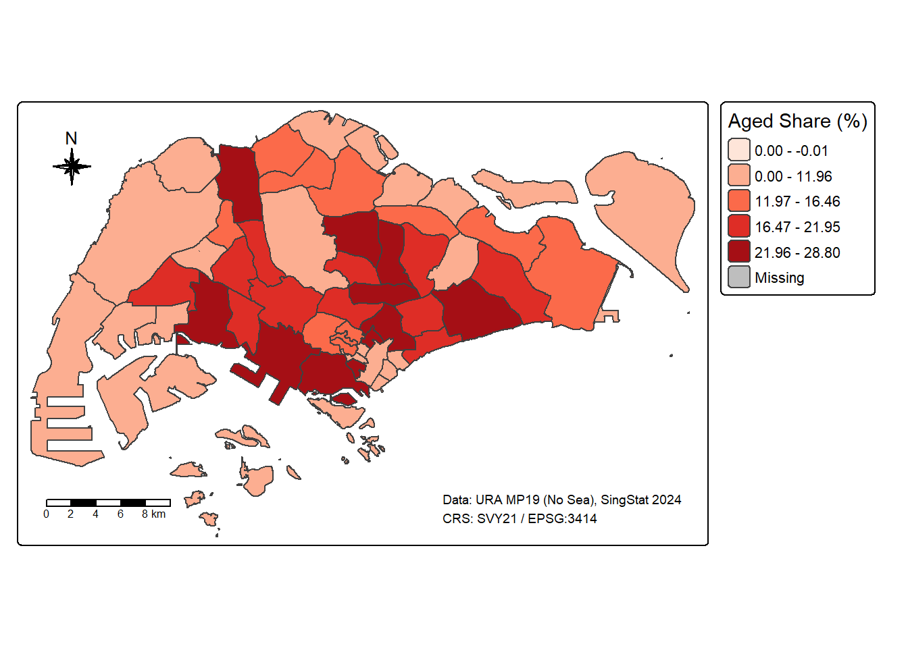
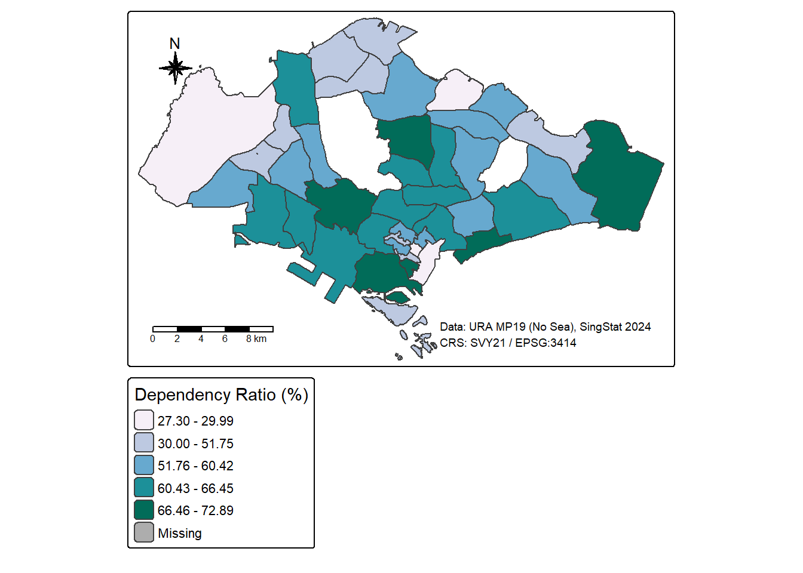
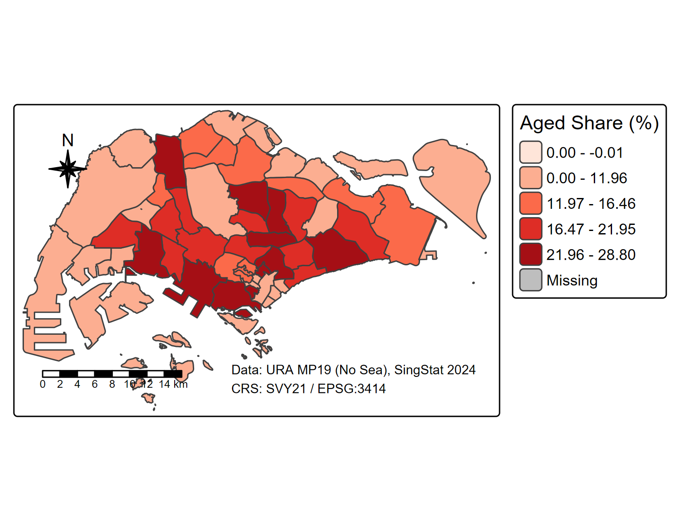
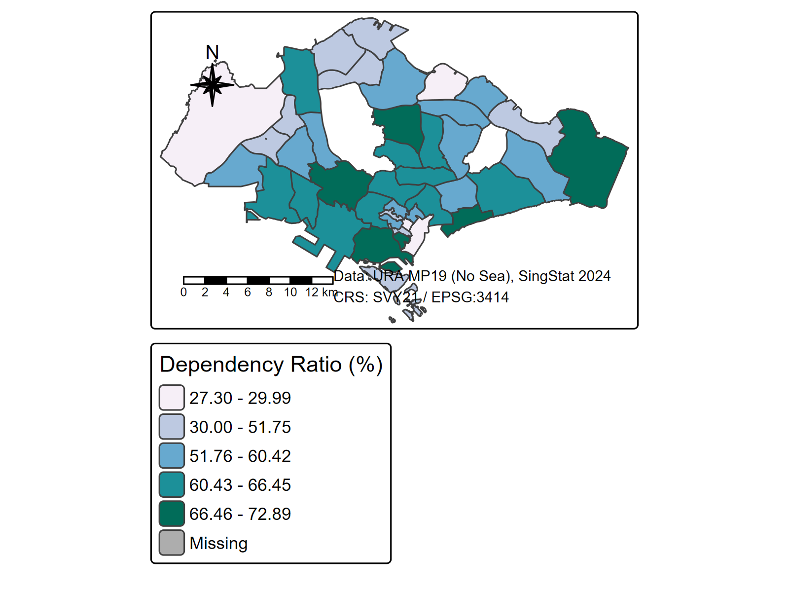

# Import Master Plan 2019 Subzone Boundary (No Sea) from KMLkml_file <-file.path(path_geo, "MasterPlan2019SubzoneBoundaryNoSeaKML.kml")if (!file.exists(kml_file)) {stop("KML file not found at: ", kml_file)}# Read KML filesubzone <-st_read(kml_file, quiet =FALSE)
Reading layer `URA_MP19_SUBZONE_NO_SEA_PL' from data source
`C:\Users\HOPE\Desktop\ISSS626\Hands-on_Ex\Hands-on_ex01\data\geospatial\MasterPlan2019SubzoneBoundaryNoSeaKML.kml'
using driver `KML'
Simple feature collection with 332 features and 2 fields
Geometry type: MULTIPOLYGON
Dimension: XY
Bounding box: xmin: 103.6057 ymin: 1.158699 xmax: 104.0885 ymax: 1.470775
Geodetic CRS: WGS 84
Code
# Check if GEOMETRYCOLLECTION and extract polygons if neededif (any(st_geometry_type(subzone) =="GEOMETRYCOLLECTION")) {message("Extracting POLYGON from GEOMETRYCOLLECTION...") subzone <-st_collection_extract(subzone, "POLYGON")}# Transform to SVY21 (EPSG:3414)subzone <-st_transform(subzone, crs =3414)message("CRS after transformation: EPSG:", st_crs(subzone)$epsg)
Parse KML Attributes
Code
# Function to extract field from HTML descriptionextract_kml_field <-function(html_text, field_name) {if (is.na(html_text) || html_text =="") return(NA_character_) page <-read_html(html_text) rows <- page %>%html_elements("tr")# Find the row with matching field name value <- rows %>%keep(~html_text2(html_element(.x, "th")) == field_name) %>%html_element("td") %>%html_text2()if (length(value) ==0) NA_character_else value}# Check if PLN_AREA_N and SUBZONE_N existif (!all(c("PLN_AREA_N", "SUBZONE_N") %in%names(subzone))) {message("Extracting planning area and subzone names from Description field...")# Extract fields from HTML description subzone <- subzone %>%mutate(pln_area_n =map_chr(Description, extract_kml_field, "PLN_AREA_N"),subzone_n =map_chr(Description, extract_kml_field, "SUBZONE_N") ) %>%select(-Name, -Description)} else {# If fields exist, just rename to snake_case subzone <- subzone %>%clean_names()}# Display sample datamessage("Subzone data structure:")message("- Records: ", nrow(subzone))message("- Planning areas: ", n_distinct(subzone$pln_area_n))
Aggregate to Planning Area Level
Code
# Aggregate subzones to planning area levelplanning <- subzone %>%group_by(pln_area_n) %>%summarise(do_union =TRUE,.groups ='drop' )message("Planning areas created: ", nrow(planning))# Verify CRSstopifnot(st_crs(planning) ==st_crs(3414))
Import Population Data
Code
# --- Import population CSV (robust rename) ---pop_file <-file.path(path_asp, "respopagesextod2024.csv")if (!file.exists(pop_file)) stop("Population CSV file not found at: ", pop_file)pop_raw <-read_csv(pop_file, show_col_types =FALSE)message("Raw columns: ", paste(names(pop_raw), collapse =", "))# 标准化列名为小写下划线popdata <- pop_raw %>% janitor::clean_names()nm <-names(popdata)if ("planning_area"%in% nm) popdata <- dplyr::rename(popdata, pa = planning_area)if ("planning_area_name"%in% nm) popdata <- dplyr::rename(popdata, pa = planning_area_name)if ("age_group"%in% nm) popdata <- dplyr::rename(popdata, ag = age_group)if ("type_of_dwelling"%in% nm) popdata <- dplyr::rename(popdata, tod = type_of_dwelling)if ("value"%in% nm) popdata <- dplyr::rename(popdata, pop = value)popdata <- popdata %>%mutate(pa =str_squish(pa),ag =str_replace_all(str_to_lower(ag), "\\s+", "_"),tod =str_squish(tod),sex =str_squish(sex) )# 映射不同写法 -> 统一到 pa / ag / sex / tod / pop# （左边=原始列名，右边=统一后的列名）alias_map <-c("planning_area"="pa","planning_area_name"="pa","pa"="pa","age_group"="ag","ag"="ag","sex"="sex","type_of_dwelling"="tod","tod"="tod","value"="pop","population"="pop")# 只对存在的列做重命名：rename(new = old)map <- alias_map[names(alias_map) %in%names(popdata)]popdata <- dplyr::rename(popdata, !!!setNames(names(map), map))# 现在这5列应该都在：pa / ag / sex / tod / popneed <-c("pa", "ag", "sex", "tod", "pop")miss <-setdiff(need, names(popdata))if (length(miss)) stop("These required columns are missing after rename: ", paste(miss, collapse =", "))# 文本清洗：去多余空格，小写化 age_group 并把空格变下划线popdata <- popdata %>% dplyr::mutate(pa = stringr::str_squish(pa),ag = stringr::str_replace_all(stringr::str_to_lower(ag), "\\s+", "_"),tod = stringr::str_squish(tod),sex = stringr::str_squish(sex) )message("Normalized columns: ", paste(names(popdata), collapse =", "))
Data Wrangling
Process Population Data
Code
# --- Process population BY SUBZONE (sum across Sex and TOD) ---# 前提：import-population 已 clean_names()，并把列名统一成 pa/sz/ag/sex/tod/pop/time# 如果你还没统一列名，请在 import-population 那块 clean_names() 后加：# nm <- names(popdata)# if ("planning_area" %in% nm) popdata <- dplyr::rename(popdata, pa = planning_area)# if ("subzone" %in% nm) popdata <- dplyr::rename(popdata, sz = subzone)# if ("age_group" %in% nm) popdata <- dplyr::rename(popdata, ag = age_group)# if ("type_of_dwelling" %in% nm) popdata <- dplyr::rename(popdata, tod = type_of_dwelling)# if ("value" %in% nm) popdata <- dplyr::rename(popdata, pop = value)# 0) 只取 2024（如果有 time 列）pop_w <- popdataif ("time"%in%names(pop_w)) { pop_w <- pop_w %>% dplyr::filter(time ==max(time, na.rm =TRUE))}# 1) 不再按 Sex/TOD 过滤，直接“对子区+年龄段”把人头加总（= Total）pop_sz <- pop_w %>% dplyr::group_by(sz, ag) %>% dplyr::summarise(pop =sum(pop, na.rm =TRUE), .groups ="drop") %>%# 标准化子区名，提取起始年龄 dplyr::mutate(sz_clean = stringr::str_squish(stringr::str_to_upper(sz)),ag_start = readr::parse_integer(stringr::str_extract(ag, "^[0-9]+")),age_category = dplyr::case_when(!is.na(ag_start) & ag_start <=19~"young",!is.na(ag_start) & ag_start <=64~"econ",TRUE~"aged" ) ) %>% dplyr::count(sz_clean, age_category, wt = pop, name ="population") %>% tidyr::complete(sz_clean, age_category, fill =list(population =0)) %>% tidyr::pivot_wider(names_from = age_category, values_from = population, values_fill =0)# 2) 指标（安全版）for (col inc("young","econ","aged")) if (!col %in%names(pop_sz)) pop_sz[[col]] <-0pop_sz <- pop_sz %>% dplyr::mutate(total = young + econ + aged,aged_share = dplyr::if_else(total >0, 100* aged / total, 0),dependency = dplyr::if_else(econ >0, 100* (young + aged) / econ, NA_real_) )message("Subzone-level population rows: ", nrow(pop_sz))
tmap_options(show.messages =FALSE)# Map A —— Aged 65+ share（过滤 NA，避免 Missing）planning_aged <- planning_pop[!is.na(planning_pop$aged_share) &!sf::st_is_empty(planning_pop), ]map_aged <-tm_shape(planning_aged) +tm_polygons(col ="aged_share", style ="quantile", n =5, palette ="Reds",title ="Aged Share (%)") +tm_layout(legend.outside =TRUE) +tm_compass(type ="8star", size =1.8, position =c("left","top")) +tm_scale_bar(position =c("left","bottom")) +tm_credits("Data: URA MP19 (No Sea), SingStat 2024\nCRS: SVY21 / EPSG:3414",position =c("right","bottom"), size =0.6)map_aged

Code
tmap_save(map_aged, file.path(path_fig, "ex01b_aged_share_quantile.png"),width =1600, height =1200, dpi =300, units ="px")
Map B: Dependency Ratio
Code
# Map B —— Dependency ratio（过滤 NA）planning_dep <- planning_pop[!is.na(planning_pop$dependency) &!sf::st_is_empty(planning_pop), ]map_dependency <-tm_shape(planning_dep) +tm_polygons(col ="dependency", style ="jenks", n =5, palette ="PuBuGn",title ="Dependency Ratio (%)") +tm_layout(legend.outside =TRUE) +tm_compass(type ="8star", size =1.8, position =c("left","top")) +tm_scale_bar(position =c("left","bottom")) +tm_credits("Data: URA MP19 (No Sea), SingStat 2024\nCRS: SVY21 / EPSG:3414",position =c("right","bottom"), size =0.6)map_dependency

Code
tmap_save(map_dependency, file.path(path_fig, "ex01b_dependency_jenks.png"),width =1600, height =1200, dpi =300, units ="px")
Results
The two choropleth maps have been successfully created and saved to the figures folder:
Map A: Share of Aged Population (65+)

Aged Population Share
This map uses quantile classification with 5 classes to show the distribution of aged population (65 years and above) as a percentage of total population across Singapore’s planning areas. The red color ramp helps identify areas with higher concentrations of elderly residents.
Map B: Dependency Ratio

Dependency Ratio
This map uses Jenks natural breaks classification with 5 classes to visualize the dependency ratio across planning areas. The dependency ratio represents the proportion of economically dependent population (young and aged) to the economically active population. The PuBuGn color scheme provides clear visual distinction between areas with different dependency levels.